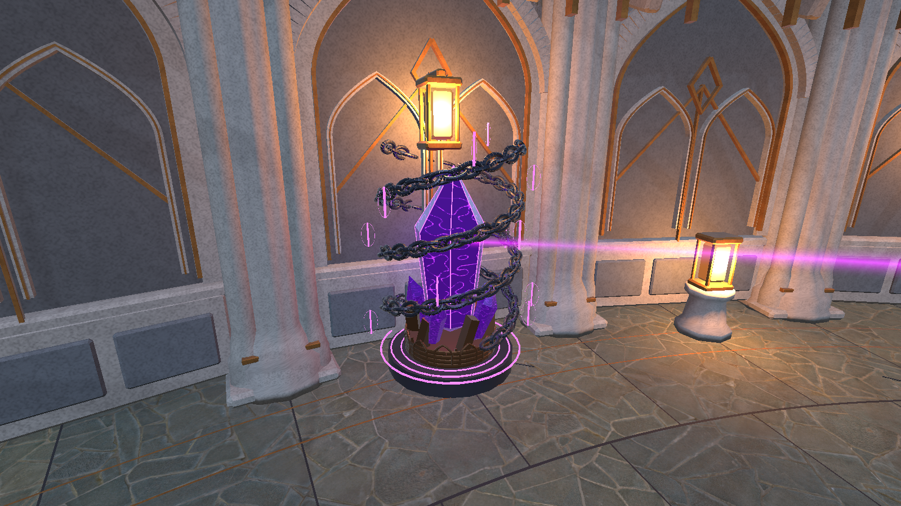
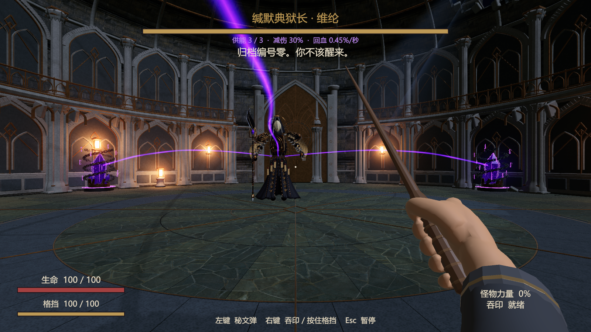
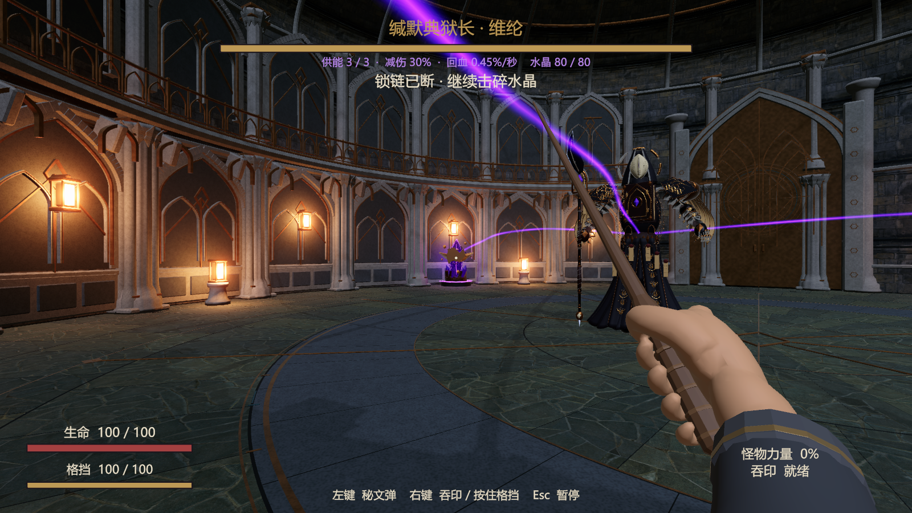
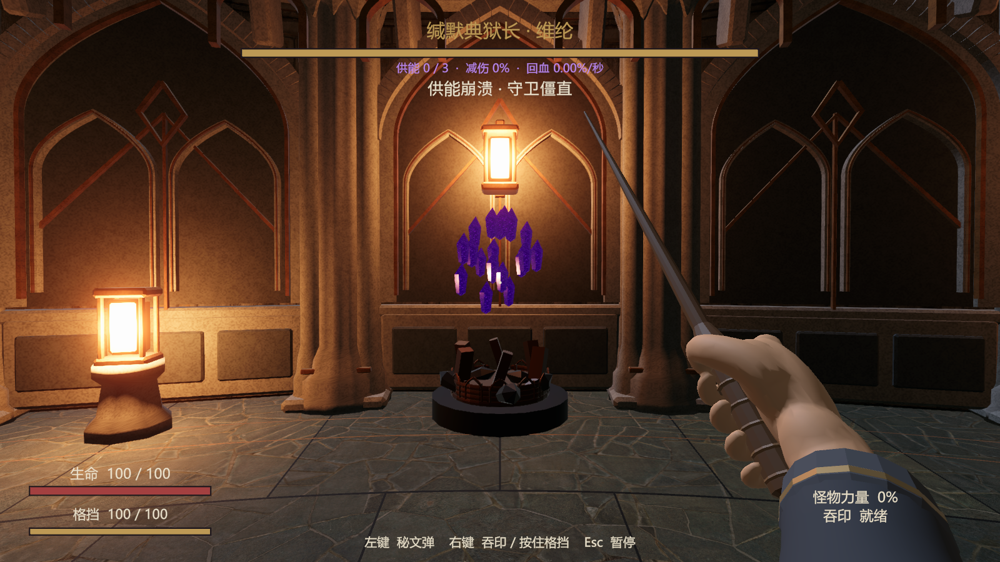

以下是本地 Mac 游戏实际运行截图。三座外围水晶、盘旋实体锁链、符文、紫色局部光及供能线已搭建；中央保持开放。
先断链，再破晶。每颗水晶提供10个百分点减伤及0.15%最大生命/秒回血。断链保留供能；破晶关闭对应光线、共鸣和减伤回血，全破触发一次2秒僵直。重试恢复三组。数值可在组件调整。
35项玩法断言通过；最新原生包25项检查通过、无记录错误，包括真实输入驱动秘文弹击破、各路循环独立停止、重试与返回。中文缺字已修复；本轮修正自发光标记，增强紫晶棱面、纹理与供能线，增加底座拱饰，破晶时底座符文同时熄灭。测试延长了Boss移动间隔来隔离水晶交互；不代表人工艺术或难度验收。
建筑层次、暗色材质和破顶氛围已落地，装饰精细度仍低于概念图；当前角色是法杖秘文弹。法杖新音效待你试听选择。
编辑器测试启动时存在 Unity Search 索引异常，发生于编辑器内部；35项玩法断言通过。最终原生运行的错误记录为空。



